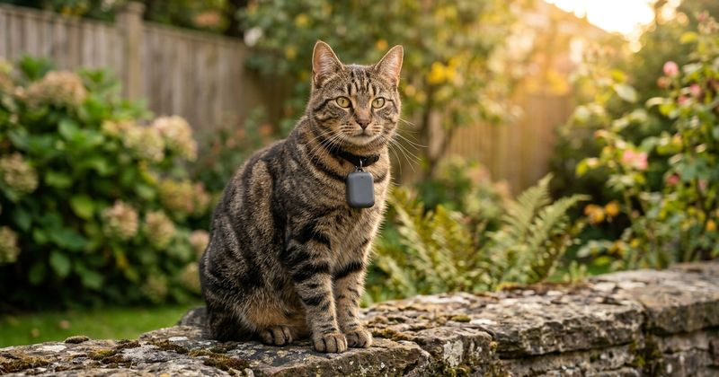
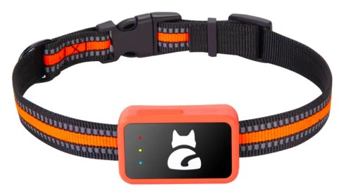

Qual a Melhor Coleira GPS para Gato em 2026? Modelo Indicado e Como Escolher

A melhor coleira GPS para gato é um rastreador leve, com 4G (para localizar o gato mesmo longe de casa) e preso a uma coleira com engate de segurança (breakaway). Para gato que sai de casa, o modelo que indicamos é o rastreador ANXK G68 4G: 27 g, cerca virtual e histórico de rotas, por R$ 301,99 no Mercado Livre em 24/10/2026. Para gato que só fica em casa ou no quintal, uma tag Bluetooth barata pode bastar. As diferenças estão abaixo.
Em resumo
- Gato que sai à noite ou some por horas: rastreador GPS 4G leve, com chip de dados. Indicamos o ANXK G68 (27 g).
- Gato de apartamento que pode escapar: tag Bluetooth compatível com a rede da Apple ou do Google. Ela não tem GPS, mas custa bem menos.
- Peso e engate de segurança importam mais para gato do que para cão: o pescoço é menor e o gato se espreme em vãos onde a coleira pode prender.
- Rastreador 4G precisa de chip com plano de dados, comprado à parte.
Qual Tipo de Coleira GPS Escolher para o Seu Gato
Antes do modelo, vale escolher a tecnologia certa para a rotina do gato. Os preços abaixo foram consultados no Mercado Livre em 24/10/2026:
| Tipo | Como localiza | Custo | Melhor para |
|---|---|---|---|
| Tag Bluetooth (padrão AirTag ou Google) | Não tem GPS. Aparece no mapa quando passa perto de celulares da rede Apple ou Google | A partir de cerca de R$ 80, sem mensalidade | Gato de apartamento ou que fica no quintal |
| Rastreador GPS 4G | GPS + rede móvel, posição no app em tempo real | Cerca de R$ 220 a R$ 350, mais o plano de dados do chip | Gato que sai de casa, some à noite ou mora em casa com quintal aberto |
| Rastreadores profissionais | GPS de longo alcance com base própria | Acima de R$ 2.000 | Uso em cães de caça e trilha; pesados e grandes demais para gato |
Se a dúvida é entre Bluetooth e chip, o comparativo detalhado está em coleira GPS Bluetooth x chip de operadora.
Modelo Indicado: Rastreador GPS ANXK G68 4G
O ANXK G68 é um dos rastreadores 4G mais leves que encontramos no Mercado Livre, e o anúncio o recomenda para cães e gatos. Os dados abaixo vêm do anúncio e foram consultados em 24/10/2026. Não testamos o aparelho.

| Produto | Coleira Rastreador GPS ANXK 4G G68 para Cães e Pets |
|---|---|
| Preço | A partir de R$ 301,99 (14 ofertas novas). Na loja oficial AMAZONSTORE: R$ 305,89 no Pix ou 6x de R$ 53,66 sem juros |
| Peso | 27 g |
| Conectividade | 4G CAT-1. Precisa de chip com plano de dados (não incluso) |
| Localização | 5 modos: GPS, AGPS, BDS (BeiDou), Wi-Fi e LBS (torres de celular). Precisão de até 10 m, segundo o fabricante |
| Recursos no app | Cerca virtual com alerta, histórico de rotas dos últimos 90 dias, nível de atividade diária |
| Bateria | 850 mAh, até 96 horas de uso contínuo (cerca de 4 dias), segundo o fabricante |
| Resistência | IP65: aguenta chuva e respingos, mas não submersão |
| Coleira | Náilon com costura refletiva, fecho tipo presilha ("broche") |
| Animais recomendados | Cão e gato |
| Avaliação | 5,0 com 1 avaliação (inclui opiniões de outros países) |
| Garantias da plataforma | Devolução grátis em 30 dias e Compra Garantida do Mercado Livre |
Por que indicamos para gato
- 27 g é bem menos que a média dos rastreadores 4G. O JT-08-AL, que indicamos para cães, pesa 40 g.
- 5 modos de localização: Wi-Fi e torres de celular ajudam quando o gato se esconde em lugares onde o GPS por satélite falha, como embaixo de carros ou dentro de garagens.
- Cerca virtual e histórico de 90 dias: mostram para onde o gato costuma ir à noite, o que ajuda a procurar mais rápido.
- Costura refletiva: deixa o gato mais visível para motoristas à noite.
O que considerar antes de comprar
- O fecho não é breakaway. A coleira vem com presilha comum, que não abre sozinha se o gato ficar preso. Para gato que sai de casa, pergunte ao vendedor se o rastreador pode ser preso a uma coleira com engate de segurança.
- Chip obrigatório: a única avaliação publicada diz que "precisa de chip para funcionar" e que a configuração é fácil seguindo o manual. Some o plano de dados ao preço.
- Bateria de cerca de 4 dias: conte com recarga duas vezes por semana, ou mais se a atualização da posição estiver muito frequente.
- Poucas avaliações: ainda há só uma. Aproveite a devolução de 30 dias para testar a cerca virtual e a precisão logo que chegar.
- Nome do aplicativo: o anúncio não informa. Pergunte qual é e se ele está na loja Android e na iOS.
🐾 Rastreador GPS ANXK G68 4G (27 g): veja o preço de hoje no Mercado Livre.
Ver preço no Mercado LivreLink de afiliado: podemos receber uma comissão por compras feitas através deste link, sem custo adicional para você.
Peso e Engate de Segurança: O Que Muda do Cão para o Gato
- Peso: gatos são mais sensíveis a peso extra no pescoço que cães de porte parecido. Entre dois rastreadores com os mesmos recursos, prefira o mais leve. Observe o gato nos primeiros dias: se ele coça muito a coleira, anda abaixado ou para de pular, o conjunto pode estar pesado ou mal ajustado.
- Engate de segurança (breakaway): a coleira abre sozinha se o gato ficar preso em um galho, grade ou vão. Esse cuidado é mais importante para gato do que para cão, porque gatos se espremem em espaços apertados.
- Ajuste: deve caber um ou dois dedos entre a coleira e o pescoço. Mais solta, o gato tira a coleira; mais justa, machuca.
- Adaptação: coloque a coleira por períodos curtos dentro de casa antes de deixar o gato sair com ela.
Por Que Gatos Somem — e Como Isso Afeta o GPS
Gatos tratam a vizinhança como território, não só a casa, e podem se afastar bastante durante a noite. Relatos compilados pela Polipet falam em até 3 km. O cio também é um gatilho comum de fuga. Diferente do cão, o gato costuma se esconder em vãos estreitos (embaixo de carros, dentro de dutos, atrás de muros), onde o sinal de GPS por satélite fica fraco. Por isso rastreadores com Wi-Fi e LBS como modos extras de localização fazem diferença para gato.
Autonomia de Bateria
Em coleiras GPS para gato, a bateria costuma durar de 2 a 14 dias, dependendo do modelo e da frequência de atualização configurada no app (comparativo da Patas da Casa, consultado em 22/08/2026). Atualizações mais espaçadas aumentam a autonomia, mas deixam a posição menos atual. Para gato que sai bastante, vale atualizar com mais frequência à noite.
Cerca Virtual Também Funciona para Gatos
Você desenha a área segura no app e recebe um alerta quando o gato sai dela. Como gatos exploram telhados e muros, deixe folga no perímetro para evitar alertas falsos. O passo a passo, o tamanho ideal da cerca e os erros mais comuns estão no guia de cerca virtual; a configuração é a mesma para cão e gato.
Coleira GPS x Microchip em Gatos
O microchip identifica o gato caso alguém o encontre e leve a uma clínica, mas não informa onde ele está agora. A coleira GPS é o que permite agir antes de chegar a esse ponto. Muitos tutores usam os dois. Veja a comparação entre coleira GPS e microchip.
Conclusão: Como Decidir
Para gato de apartamento, uma tag Bluetooth leve e sem mensalidade resolve a maioria dos sustos. Para gato que sai de casa, o melhor investimento é um rastreador GPS 4G leve, com chip de dados, preso a uma coleira com engate de segurança. Nessa categoria, o ANXK G68 se destaca pelos 27 g e pelos 5 modos de localização, mas confirme o fecho e o aplicativo com o vendedor. Para ver todas as opções, volte ao guia completo de coleira GPS para pet. Se a prioridade é não pagar mensalidade, veja a melhor coleira GPS sem mensalidade.
🐾 Rastreador GPS 4G leve para gatos, com cerca virtual e histórico de rotas.
Ver no Mercado LivreLink de afiliado: podemos receber uma comissão por compras feitas através deste link, sem custo adicional para você.
Perguntas Frequentes
Qual a melhor coleira com GPS para gatos?
Para gato que sai de casa, a melhor opção é um rastreador GPS 4G leve, com chip de dados, preso a uma coleira com engate de segurança. Indicamos o ANXK G68, que pesa 27 g e tem cerca virtual e histórico de rotas. Para gato de apartamento, uma tag Bluetooth compatível com a rede da Apple ou do Google costuma bastar e não tem mensalidade.
Coleira GPS para gato precisa de chip ou mensalidade?
Rastreadores GPS 4G precisam de um chip com plano de dados, que normalmente é comprado à parte. Tags Bluetooth (padrão AirTag ou Google) não usam chip nem têm mensalidade, mas só localizam o gato quando ele passa perto de celulares da rede.
AirTag funciona como coleira GPS para gato?
A AirTag e tags parecidas não têm GPS. Elas aparecem no mapa quando passam perto de um celular compatível; a AirTag usa a rede Buscar da Apple e exige iPhone. Funcionam bem para achar um gato escondido na vizinhança, mas não mostram a posição em tempo real se ele estiver longe de pessoas.
Qual o peso ideal de uma coleira GPS para gato?
Quanto mais leve, melhor. Entre modelos com os mesmos recursos, escolha o de menor peso. O ANXK G68 pesa 27 g, contra cerca de 40 g de rastreadores 4G pensados para cães. Observe o comportamento do gato nos primeiros dias para saber se ele se adaptou.
Existe coleira com GPS específica para gatos?
O rastreador costuma ser o mesmo usado em cães pequenos. O que muda é a coleira: para gato, prefira as de engate de segurança (breakaway), que abrem se o gato ficar preso, e rastreadores mais leves.
Escrito por Nildo Alves para o Smart Pet Gadgets. Preços e especificações vêm dos anúncios na data indicada e podem mudar. Veja nossa política editorial e como verificamos as fontes citadas neste artigo.